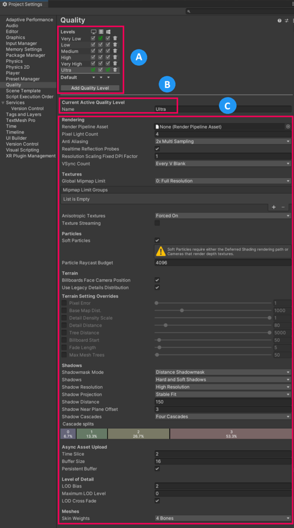

Quality
Switch to ScriptingUnity allows you to set the level of graphical quality it attempts to render. Generally speaking, quality comes at the expense of frame rate and so it may be best not to aim for the highest quality on mobile devices or older hardware since it tends to have a detrimental effect on gameplay. Use the Quality settings (menu: Edit > Project Settings, then select the Quality category) to select the Quality Level in the Editor for the chosen device. It is split into two main areas: the Quality matrix appears at the top; and below it, the settings for the active Quality Level appear.
Unity lets you assign a name to a given combination of quality options for easy reference. The rows of the matrix let you choose which of the different platforms each Quality Level applies to. The Default row at the bottom of the matrix is not a Quality Level in itself but rather sets the default Quality Level used for each platform (a green checkbox in a column denotes the level currently chosen for that platform). Unity comes with six Quality Levels pre-enabled but you can add your own levels.

A: The Quality Level you have defined in this project.
B: The currently active Quality Level.
C: The configuration of the current Quality Level.
To delete an unwanted Quality Level, use the trashcan icon (the rightmost column).
To select a Quality Level for editing, click on its name in the matrix.
To define a new Quality Level, click the Add Quality Level button and type the name for the new level in the Name property box.
Then you can choose which of the quality options documented in the following sections you need to update or set:
- Rendering
- TexturesAn image used when rendering a GameObject, Sprite, or UI element. Textures are often applied to the surface of a mesh to give it visual detail. More info
See in Glossary - ParticlesA small, simple image or mesh that is emitted by a particle system. A particle system can display and move particles in great numbers to represent a fluid or amorphous entity. The effect of all the particles together creates the impression of the complete entity, such as smoke. More info
See in Glossary - TerrainThe landscape in your scene. A Terrain GameObject adds a large flat plane to your scene and you can use the Terrain’s Inspector window to create a detailed landscape. More info
See in Glossary - Shadows
- Async Asset Upload
- Level of DetailThe Level Of Detail (LOD) technique is an optimization that reduces the number of triangles that Unity has to render for a GameObject when its distance from the Camera increases. More info
See in Glossary - Meshes
Rendering
| Property | Description |
|---|---|
| Render PipelineA series of operations that take the contents of a Scene, and displays them on a screen. Unity lets you choose from pre-built render pipelines, or write your own. More info See in Glossary |
The Render Pipeline Asset to use for this Quality Level. |
| Pixel Light Count | Set the maximum number of pixelThe smallest unit in a computer image. Pixel size depends on your screen resolution. Pixel lighting is calculated at every screen pixel. More info See in Glossary lights when Unity uses Forward RenderingA rendering path that renders each object in one or more passes, depending on lights that affect the object. Lights themselves are also treated differently by Forward Rendering, depending on their settings and intensity. More info See in Glossary. |
| AntiAliasingA technique for decreasing artifacts, like jagged lines (jaggies), in images to make them appear smoother. See in Glossary |
Choose the level of Multi-Sample Anti-aliasing (MSAA) that the GPU performs. The options are Disabled, 2x Multi Sampling, 4x Multi Sampling and 8x Multi Sampling. Anti aliasing smooths the appearance of polygon edges. As the level of anti-aliasing increases, so does the smoothness and the performance cost on the GPU. MSAA is compatible only with Forward rendering. For more information on other types of anti-aliasing and compatibility, see Post processing. |
| Realtime Reflection Probes | Enable this option to update reflection probesA rendering component that captures a spherical view of its surroundings in all directions, rather like a camera. The captured image is then stored as a Cubemap that can be used by objects with reflective materials. More info See in Glossary during gameplay. |
| Resolution Scaling Fixed DPI Factor | Downscales the device’s screen resolution below its native resolution. For more details, see Android Player settings and iOS Player settings. |
| V Sync Count | Choose to synchronize rendering with vertical blanks or not to synchronize at all. Unity can synchronize rendering with the refresh rate of the display device to avoid tearing artifacts. The available options are Every V Blank, Every Second V Blank, or Don’t Sync. |
| Realtime GI CPU Usage | The CPU budget you allow Enlighten Realtime Global Illumination to use for lighting calculations at runtime. Increasing this makes the system react faster to changes in lighting at a cost of using more CPU time. Note: Some platforms allow all CPUs to be occupied by worker threads whereas some enforce maximums. For example, some gaming consoles allow a maximum of 4 CPU cores. For Android devices, if it is a bigLittle architecture, only the little CPUs are used; otherwise the maximum is one less than the total number of CPUs. Note that this is only shown for Scriptable Render Pipelines. If you use the Built-in Render Pipeline, you can find this property in the graphics settings. |
Tearing
The picture on the display device is not continuously updated, but rather the updates happen at regular intervals much like frame updates in Unity. However, Unity’s updates are not necessarily synchronized with those of the display, so it is possible for Unity to issue a new frame while the display is still rendering the previous one. This results in a visual artifact called “tearing” at the position onscreen where the frame change occurs.
It is possible to get Unity to switch frames only during the period where the display device is not updating, the so-called “vertical blank”. The V Sync Count option in Quality settings synchronizes frame switches with the device’s vertical blank or optionally with every other vertical blank. The latter may be useful if the game requires more than one device update to complete the rendering of a frame.
Textures
| Property | Description |
|---|---|
| Global Mipmap Limit | Choose the highest resolution mipmap level that Unity uses when it renders textures. Higher mipmap levels have lower resolutions, which means that they require less GPU memory and GPU processing time. This property only affects textures with a texture shape of 2D. The options are:
Textures that do not have mipmaps render at their full resolution, regardless of the option you choose. |
| Mipmap Limit Groups | Use these groups to designate specific textures that should disregard the globalTextureMipmapLimit or add a bias. This makes it possible to allocate more of your memory budget for important textures and less of it for less important textures. This property only affects textures with a texture shape of 2D. The options are:
The Overrides replace the Global Mipmap Limit for the applicable group of textures. For example, if the Global Texture Mipmap Limit is Half Resolution and you select Override Global Mipmap Limit: Full Resolution, then the new Mipmap Limit for the applicable group of textures is Full Resolution. Note: If you delete or rename a Mipmap Limit Group, this triggers a dialog box that provides you with the option to re-import the textures in that group. Undo does not revert these import changes. |
| Anisotropic Textures | Choose if and how Unity uses anisotropic Textures. The options are Disabled, Per Texture and Forced On (that is, always enabled). |
|
Texture Streaming |
Enable this checkbox to use Mipmap Streaming. If you are not planning to use the Mipmap Streaming system, disable this feature to avoid any overhead. |
| Add All Cameras | Enable this checkbox to make Unity calculate Mipmap Streaming for all active Cameras in the Project. This is enabled by default. For more information, see Mipmap Streaming system: Configuring Cameras. |
| Memory Budget | Set the total amount of memory you want to assign to all loaded textures (in MB) when using the Mipmap Streaming system. This is set to 512 MB by default. For more information, see Mipmap Streaming system: Setting the memory budget. |
| Renderers Per Frame | This controls the CPU processing overhead for the Mipmap Streaming system for the main thread and associated jobs. This is 512 by default (that is, processing 512 Mesh renderers per frame). Lower values reduce processing time, but increase delays to Unity loading the mipmaps. |
| Max Level Reduction | Set the maximum number of mipmaps that the Mipmap Streaming system can discard if the Mipmap Streaming system reaches the Memory Budget. This is set to 2 by default (which means that the system discards no more than two mipmaps). This value is also the mipmap level that the Mipmap Streaming system initially loads at startup. For example, when this is set to 2, Unity skips the two highest mipmaps on first load. For more information, see Mipmap Streaming system: Setting the memory budget. |
| Max IO Requests | Set the maximum number of texture file in/out (IO) requests from the MipMap Streaming system that are active at any one time. This is set to 1024 by default. This default is set high enough to prevent any IO cap beyond what is already active due to the Async Upload pipeline or file system itself. If the Scene Texture content changes significantly and rapidly, the system might attempt to load more Texture mipmaps than the file IO can keep up with. Lowering this value reduces the IO bandwidth that the Mipmap Streaming system generates. The result is a more rapid response to changing mipmap requirements. |
Particles
| Property | Description |
|---|---|
| Soft ParticlesParticles that create semi-transparent effects like smoke, fog or fire. Soft particles fade out as they approach an opaque object, to prevent intersections with the geometry. More info See in Glossary |
Indicates whether to fade particles as they approach the edges of opaque GameObjectThe fundamental object in Unity scenes, which can represent characters, props, scenery, cameras, waypoints, and more. A GameObject’s functionality is defined by the Components attached to it. More info See in Glossary. For more information, see Soft particles. |
| Particle Raycast Budget | Set the maximum number of raycasts to use for approximate particle systemA component that simulates fluid entities such as liquids, clouds and flames by generating and animating large numbers of small 2D images in the scene. More info See in Glossary collisionsA collision occurs when the physics engine detects that the colliders of two GameObjects make contact or overlap, when at least one has a Rigidbody component and is in motion. More info See in Glossary (those with Medium or Low quality). See Particle System Collision Module. |
Soft particles
Soft particles fade out near intersections with other SceneA Scene contains the environments and menus of your game. Think of each unique Scene file as a unique level. In each Scene, you place your environments, obstacles, and decorations, essentially designing and building your game in pieces. More info
See in Glossary geometry. This looks much nicer, but is more resource intensive to process and only works on platforms that support depth textures. Furthermore, you have to use the Deferred ShadingA rendering path in the Built-in Render Pipeline that places no limit on the number of Lights that can affect a GameObject. All Lights are evaluated per-pixel, which means that they all interact correctly with normal maps and so on. Additionally, all Lights can have cookies and shadows. More info
See in Glossary rendering pathThe technique that a render pipeline uses to render graphics. Choosing a different rendering path affects how lighting and shading are calculated. Some rendering paths are more suited to different platforms and hardware than others. More info
See in Glossary, or make the cameraA component which creates an image of a particular viewpoint in your scene. The output is either drawn to the screen or captured as a texture. More info
See in Glossary render depth textures from scriptsA piece of code that allows you to create your own Components, trigger game events, modify Component properties over time and respond to user input in any way you like. More info
See in Glossary.


Terrain
| Property | Description |
|---|---|
| BillboardsA textured 2D object that rotates so that it always faces the Camera. More info See in Glossary Face Camera Position |
Enable this option to force billboards to face the camera while rendering instead of the camera plane. This produces a better, more realistic image, but is more expensive to render. |
| Use Legacy Details Distribution | Enable this option to use the previously supported scattering algorithm that often resulted in overlapping details. Included for backward compatibility with Terrains authored in Unity 2022.1 and earlier. |
| Terrain Setting Overrides | Various override settings that, when enabled, override the value of all active terrains (except those with the “Ignore Quality Settings” setting enabled). For more information about these settings, see Terrain Settings. |
| Pixel Error | Value set to Terrain Pixel Error. See Terrain Settings. |
| Base Map Dist. | Value set to Terrain Basemap Distance. See Terrain Settings. |
| Detail Density Scale | Value set to Terrain Density Scale. See Terrain Settings. |
| Detail Distance | Value set to Terrain Detail Distance. See Terrain Settings. |
| Tree Distance | Value set to Terrain Tree Distance. See Terrain Settings. |
| Billboard Start | Value set to Terrain Billboard Start. See Terrain Settings. |
| Fade Length | Value set to Terrain Fade Length. See Terrain Settings. |
| Max MeshThe main graphics primitive of Unity. Meshes make up a large part of your 3D worlds. Unity supports triangulated or Quadrangulated polygon meshes. Nurbs, Nurms, Subdiv surfaces must be converted to polygons. More info See in Glossary Trees |
Value set to Terrain Max Mesh Trees. See Terrain Settings. |
Shadows
| Property | Description | |
|---|---|---|
| Shadowmask Mode | Choose the shadowmask behavior when using the Shadowmask Mixed lighting mode. Use the Lighting window (menu: Window > Rendering > Lighting) to set this up in your Scene. | |
| Distance ShadowmaskA version of the Shadowmask lighting mode that includes high quality shadows cast from static GameObjects onto dynamic GameObjects. More info See in Glossary |
Unity uses real-time shadows up to the Shadow Distance, and baked shadows beyond it. | |
| ShadowmaskA Texture that shares the same UV layout and resolution with its corresponding lightmap. More info See in Glossary |
Static GameObjects that cast shadows always cast baked shadows. | |
| ShadowsA UI component that adds a simple outline effect to graphic components such as Text or Image. It must be on the same GameObject as the graphic component. More info See in Glossary |
Choose which type of shadows to use. The available options are Hard and Soft Shadows, Hard Shadows Only and Disable Shadows. | |
| Shadow Resolution | Choose which resolution to render shadows at. The available options are Low Resolution, Medium Resolution, High Resolution and Very High Resolution. The higher the resolution, the greater the processing overhead. | |
| Shadow Projection | Choose which method to use for projecting shadows from a directional light. | |
| Close Fit | Renders higher resolution shadows but they can sometimes wobble slightly if the camera moves. | |
| Stable Fit | Renders lower resolution shadows but they don’t wobble with camera movements. | |
| Shadow Distance | Enter the maximum distance from the Camera at which shadows are visible. Unity does not render shadows that fall beyond this distance. | |
| Shadow Near Plane Offset | Enter the offset shadow near plane to account for large triangles being distorted by shadow pancaking. | |
| Shadow Cascades | Choose the number of shadow cascades to use. The available options are No Cascades, Two Cascades, or Four Cascades. A higher number of cascades gives better quality but at the expense of processing overhead (see Shadow Cascades for further details). | |
| Cascade splits | Adjust the cascade shadow split(s) by moving the vertical line between each cascade left or right. Depending on what value you chose for the Shadow Cascades setting, you can see two or four different colors. If Shadow Cascades is set to No Cascades, then this entire control is hidden. |
|
Async Asset Upload
| Property | Description |
|---|---|
| Time Slice | Set the amount of CPU time in milliseconds per frame Unity spends uploading buffered Texture and Mesh data to the GPU. See LoadingTextureandMeshData. |
| Buffer Size | Set the size in megabytes of the Async Upload Buffer Unity uses to stream Texture and Mesh data for the to the GPU. See LoadingTextureandMeshData. |
| Persistent Buffer | Indicates whether the upload buffer should persist even when there is nothing left to upload. |
Level of Detail
| Property | Description |
|---|---|
| Lod Bias | Set the level-of-detail (LOD) bias. LOD levels are chosen based on the onscreen size of an object. When the size is between two LOD levels, the choice can be biased toward the less detailed or more detailed of the two Models available. This is set as a fraction from 0 to +infinity. When it is set between 0 and 1 it favors less detail. A setting of more than 1 favors greater detail. For example, setting LOD Bias to 2 and having it change at 50% distance, LOD actually only changes on 25%. |
| Maximum LOD Level | Set the highest LOD that the game uses. See Maximum LOD level for more information. |
Maximum LOD level
Unity does not use Models which have a LOD below the MaximumLOD level and omits them from the build (which saves storage and memory space). Unity uses the smallest LOD value from all the MaximumLOD values linked with the Quality settings for the target platform. If an LOD level is included, then Models from that LODGroup are included in the build and always loaded at runtime for that LODGroup, regardless of the Quality setting being used. As an example, if LOD level 0 is used in any Quality setting then all the LOD levels are included in the build and all the referenced Models load at runtime.
Meshes
| Property | Description |
|---|---|
| Skin Weights | Choose the number of bones that can affect a given vertex during an animation. The available options are 1 Bone, 2 Bones, 4 Bones, and Unlimited. |
- Terrain Quality Setting Overrides added in 2022.2
QualitySettings